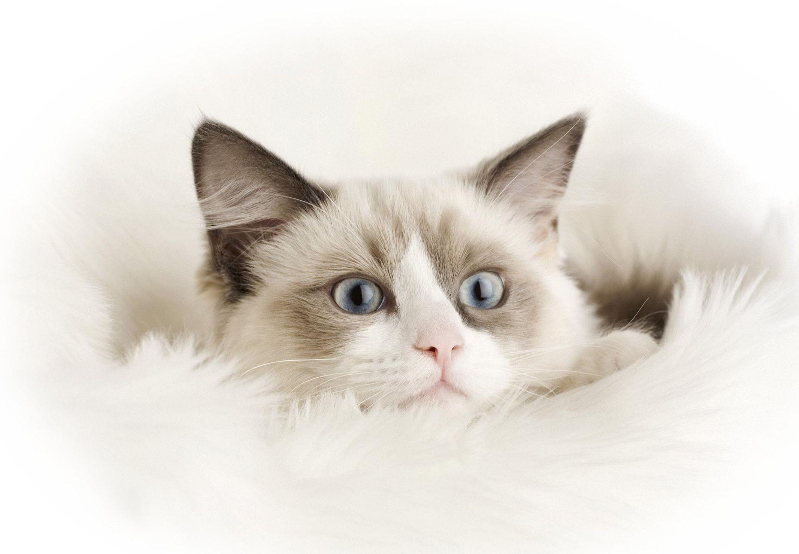
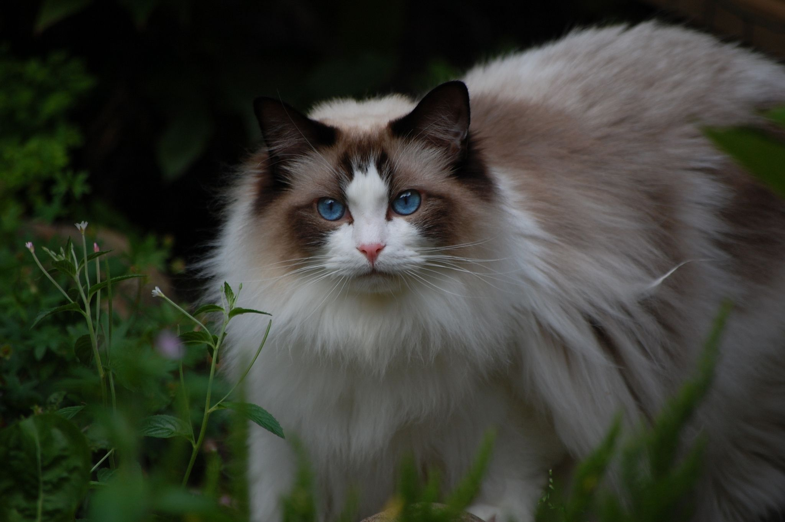
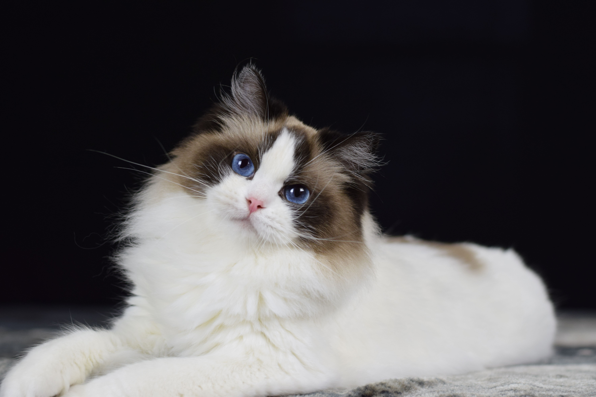
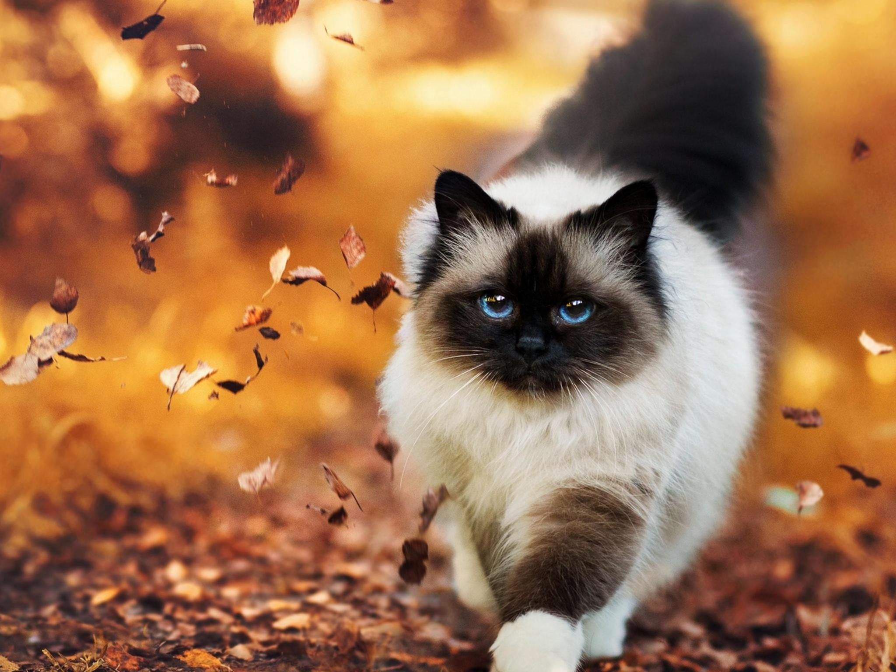

Ragdoll cats get their name from their docile temperament. They tend to go limp when picked up, much like a rag doll. At one time, people thought they couldn’t feel pain, but that is not true. Ragdolls look a lot like long-haired Siamese cats with pointed color patterns. They also have distinctive blue eyes and dog-like personalities, following their owners around the house.
Breed Overview
HEIGHT: 11 to 13 inches
WEIGHT 15 to 20 pounds
COAT AND COLOR: Medium-length and silky with many different colors and patterns with blue eyes
LIFE EXPECTANCY: 15 to 25 years
more image:
  